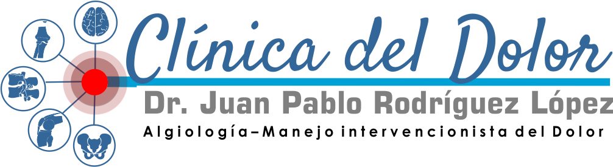
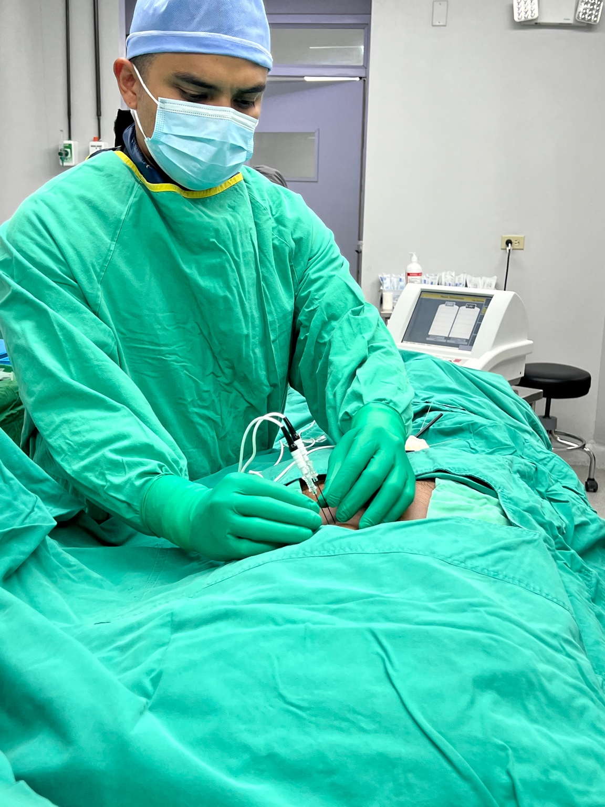
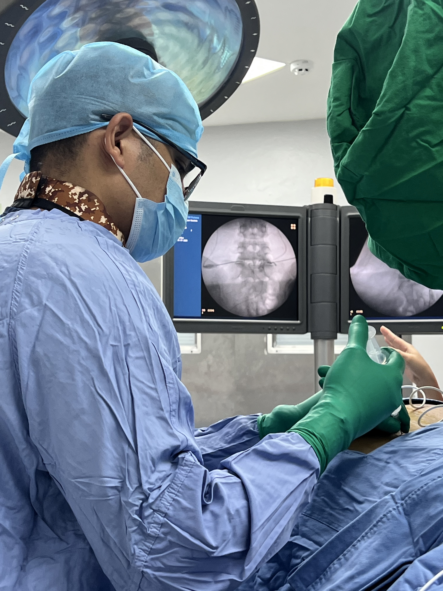
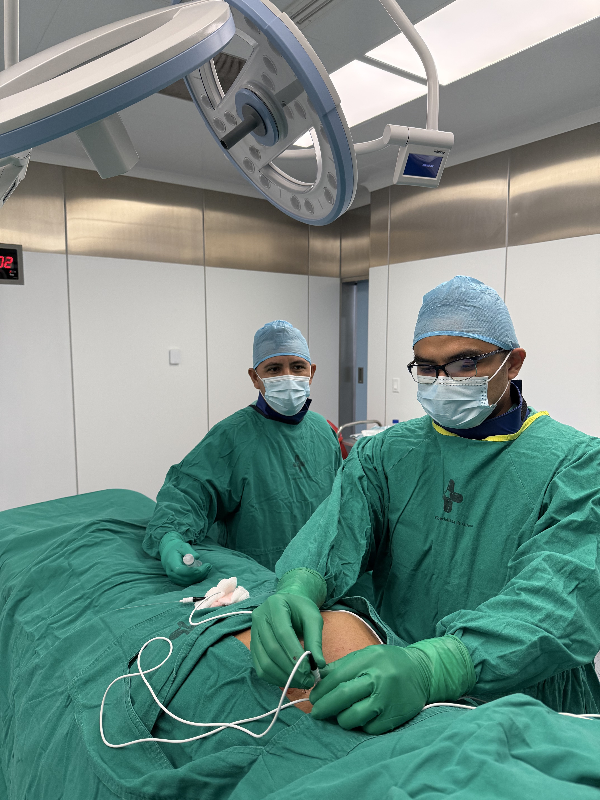

En la Clínica del Dolor del Dr. Juan Pablo Rodríguez López, nuestra visión es ser líderes en el manejo integral del dolor crónico en Panamá, proporcionando alivio eficaz, humanizado y basado en evidencia científica. Nos comprometemos a mejorar la calidad de vida de nuestros pacientes mediante tratamientos innovadores y seguros, centrados en la empatía, el respeto y la excelencia clínica.
Fomentamos el conocimiento en salud a través de publicaciones educativas, talleres, y participación activa en congresos médicos nacionales e internacionales. Nuestro compromiso es educar a pacientes y profesionales sobre nuevas alternativas en el tratamiento del dolor.
Clínica del Dolor del Dr. Juan Pablo Rodríguez López
Clínica Especializada de Azuero, tercer piso, consultorio 59 - Chitré, Panamá.
Clínica Especializada de Azuero, tercer piso, consultorio 59 - Chitré, Panamá
📞 Tel: 6615-4310
📱 WhatsApp: 6654-6636
📧 Correo: intervencionismoendolor@gmail.com
Escríbenos por WhatsApp